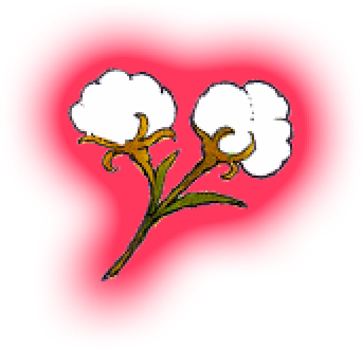
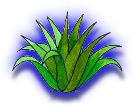
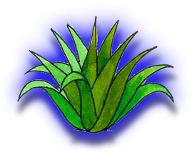
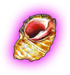
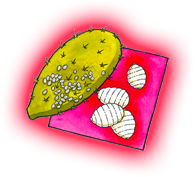

Algodón
Oveja
Seda
Añil
Caracol
Cochinilla
Hilos
Tinturas
El algodón es una fibra vegetal que nace alrededor de las semillas de la planta, a ella le llamamos algodonero. Las fibras son blandas y muy blancas se unen para formar un hilo.
" data-img="algodonFlor.png" id="Imagen01">
 El añil es una planta de origen mexicano, con ella se obtiene un color azul índigo muy característico y apreciado en el mundo entero.
El añil es una planta de origen mexicano, con ella se obtiene un color azul índigo muy característico y apreciado en el mundo entero. Para obtenerlo, se ponen a remojar sus hojas y ramas tiernas en agua. Cuando fermentan, desprenden un maravilloso tinte azul.
" data-img="anil.png" id="Imagen05"> En las costas oaxaqueñas, a la orilla de las rocas vive caracol púrpura.Esta especie en particular expele un hermoso tinte color púrpura cuando se siente amenazado, el cual para su desgracia y beneficio de los artesanos es muy apreciado para teñir hilos de algodón.
" data-img="caracol.png" id="Imagen06"> La cochinilla es un pequeño bichito que vive en la superficie de algunos nopales. Se le conoce como grana cochinilla. Al secarse, de su cuerpo se obtiene un tinte de color rojo intenso el cual es apreciado en todo en mundo." data-img="chinchilla.png" id="Imagen07">